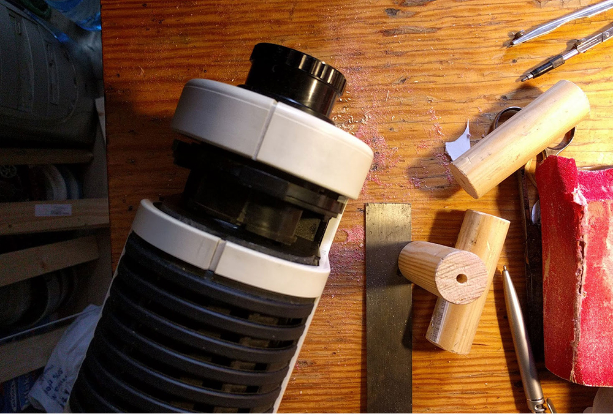
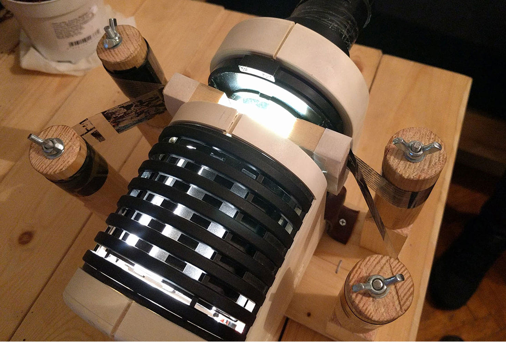
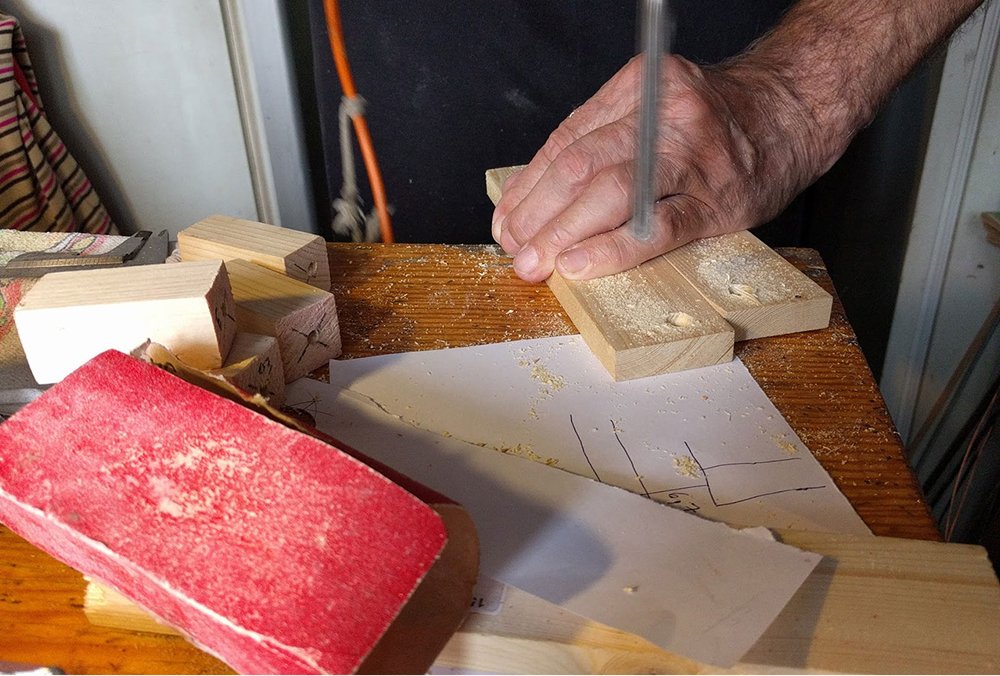
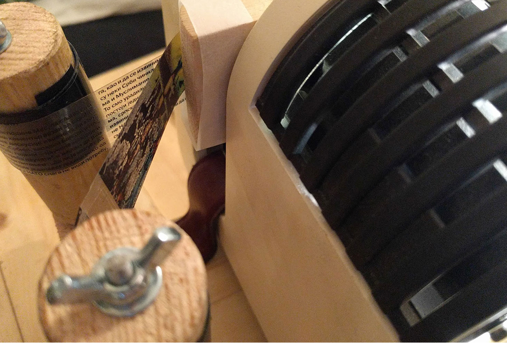
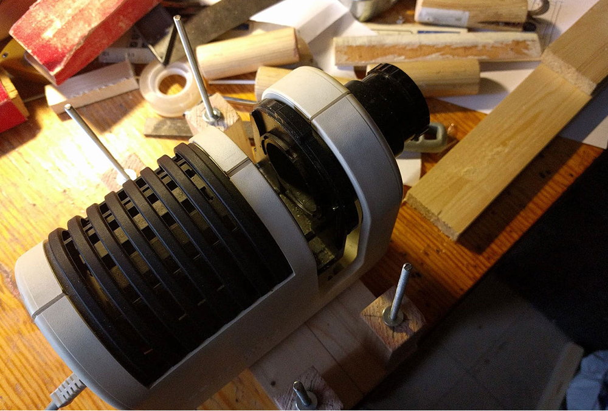
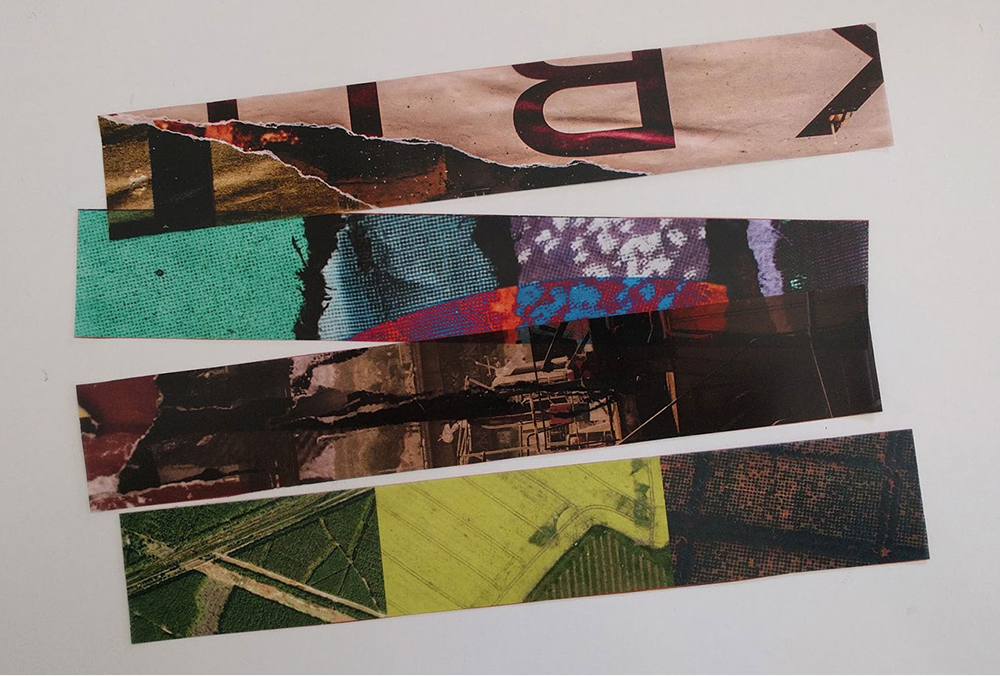
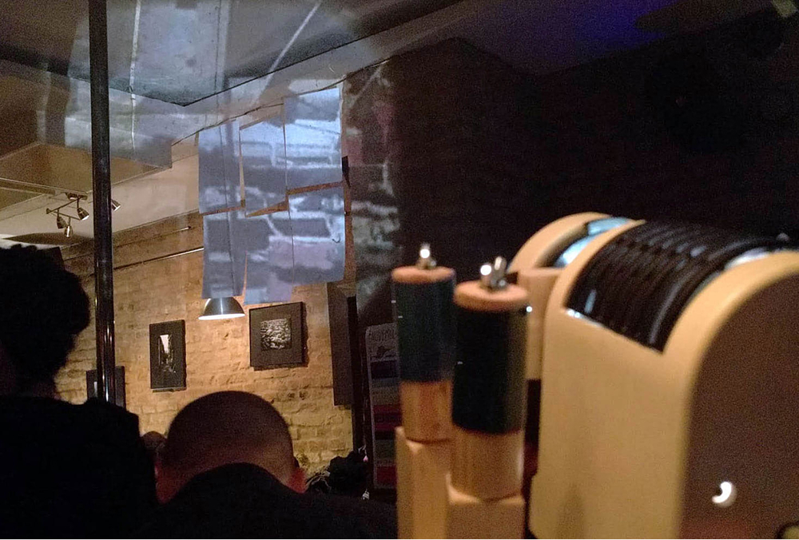

AnalogVJ
I use an old slide projector to create visual effects for live band performances. The Retro Fusion VJ Projector is a blend of vintage aesthetics and modern tinkering — an old slide projector repurposed and given new life for live shows. By enabling the use of film rolls and printing my artwork onto transparent foils, the projector turns every gig into a mesmerizing visual journey. Every tweak and enhancement has one purpose: to elevate the band experience and create a unique synergy between music and visuals — where technology meets nostalgia and adds an extra layer of depth to the stage.
Premiere of MAKURA NOTO, a performance piece by Mariko Hori and PonTon (Igor Stangliczky & Marko Jevtić): with PonTon's soundscape as the backdrop, Mariko Hori tells stories from her own dreams. PonTon are soundscape storytellers since 2008 (previously known as StJv band).







